콘크리트산업기사 (2016-03-06 기출문제)
1과목: 콘크리트재료 및 배합
1. 골재가 필요로 하는 성질 중 틀린 것은?
- 물리ㆍ화학적으로 안정하고 내구성이 클 것
- 모양이 입방체 또는 공 모양에 가깝고 시멘트 풀과 부착력이 큰 약간 거친 표면을 가질 것
- 낱알의 크기가 차이 없이 균등할 것
- 소요의 중량을 가질 것
(정답률: 95%)

2. 콘크리트 배합시 물-결합재비에 관한 설명 중 옳지 않은 것은?
- 물-결합제비는 소요의 강도, 내구성, 수밀성 및 균열저항성 등을 고려하여 정한다.
- 제빙화학제가 사용되는 콘크리트의 물-결합재비는 45% 이하로 하여야 한다.
- 콘크리트의 수밀성을 기준으로 물-결합재비를 정할 경우, 그 값을 50% 이하로 하여야 한다.
- 콘크리트 탄산화 저항성을 고려해야 하는 경우 물-결합재비는 45%이하로 하여야 한다.
(정답률: 86%)
3. 콘크리트용 골재에 대한 시험이 아닌 것은?
- 체가름 시험
- 공기량 시험
- 안정성 시험
- 유기불순물 시험
(정답률: 64%)
4. 포틀랜드 시멘트 제조시 석고를 첨가하는 주된 이유는?
- 시멘트의 조기강도 증진을 위해
- 시멘트의 급격한 응결을 방지하기 위해
- 콘크리트 제조시 유동성 증진을 위해
- 시멘트의 수화열을 조절하기 위해
(정답률: 83%)
5. 골재에 대한 설명 중 옳지 않은 것은?
- 5mm체에 거의 다 남는 골재 또는 5mm체에 다 남는 골재를 굵은 골재라 한다.
- 공사 중에 잔골재의 입도가 변하여 조립률이 최소 ±0.50 이상 차이가 있을 경우에는 배합을 수정하여야 한다.
- 굵은 골재는 견고하고, 밀도가 크고, 내구성이 커야 한다.
- 질량비로 90% 이상을 통과시키는 체 중에서 최소치수의 체눈의 호칭치수로 나타낸 것을 굵은 골재의 최대치수라 한다.
(정답률: 63%)
6. 아래 표는 공기량 5%의 공기연행 콘크리트의 시방 배합표를 나타낸 것이다. 콘크리트 배합의 잔골재율은 얼마인가? (단, 잔골재 표면건조 포화상태밀도 2.57g/cm3, 굵은골재 표면건조 포화상태밀도:2.67g/cm3, 시멘트 비중:3.16g/cm3)
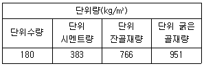
- 45.6%
- 46.6%
- 47.6%
- 48.6%
(정답률: 60%)
7. 단위수량 175kg, 단위 잔골재량 750kg 및 단위 굵은골재량이 900kg의 콘크리트에서 잔골재 및 굵은 골재의 표면수가 각각 4% 및 1%이면 보정된 단위수량은?
- 214kg
- 166kg
- 145kg
- 136kg
(정답률: 50%)
8. 콘크리트 설계기준강도가 24MPa, 5회의 실험실적으로부터 구한 압축강도의 표준편차가 5MPa이라면, 콘크리트의 배합강도는?
- 29.0MPa
- 30.5MPa
- 32.2MPa
- 33.9MPa
(정답률: 67%)
9. 골재의 체가름 시험으로부터 알 수 없는 골재의 성질은?
- 골재의 입도
- 골재의 조립률
- 굵은골재의 최대치수
- 골재의 실적률
(정답률: 62%)
10. 시멘트의 강도시험(KS L ISO 697)의 고시체 제작을 위해 모르타르를 제작하고자 한다. 사용하는 시멘트가 450g인 경우 필요한 표준사의 양으로 옳은 것은?
- 900g
- 1,103g
- 1.215g
- 1,350g
(정답률: 93%)
11. 아래 표는 시멘트의 오토클레이브 팽창도 시험 방법의 일부를 순서에 따라 나열한 것이다. 이 중 틀린 것은?
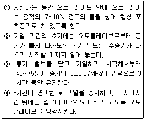
- ①
- ②
- ③
- ④
(정답률: 55%)
12. 콘크리트의 배합에 대한 일반 사항을 설명한 것으로 틀린 것은?
- 현장 콘크리트의 품질변동을 고려하여 콘크리트의 배합강도는 설계기준 강도보다 적게 정한다.
- 잔골재율은 소요의 워커빌리티를 얻을 수 있는 범위내에서 단위수량이 최소가 되도록 시험에 의해 정한다.
- 단위수량은 작업에 적합한 워커빌리티를 갖는 범위내에서 될 수 있는대로 적게 한다.
- 물-결합재비는 소요의 강도, 내구성, 수밀성 및 균열저항성 등을 고려하여 정한다.
(정답률: 81%)
13. 흡수율이 6%인 경량 잔골재의 습윤상태 무게가 800g이었고, 이 경량 잔골재를 건조로에서 노건조상태까지 건조시켰을 때 700g이 되었을 때 표면수율은 얼마인가?
- 1.11%
- 3.46%
- 5.94%
- 7.82%
(정답률: 50%)
14. 고로 슬래그 미분말을 사용한 콘크리트에 대한 설명이다. 옳지 않은 것은?
- 고로슬래그 미분말을 사용한 콘크리트는 중성화 속도를 저하시키는 효과가 있다
- 고로 슬래그 미분말을 사용한 콘크리트 철근 보호성능이 향상된다.
- 고로슬래그 미분말을 사용한 콘크리트는 수밀성이 향상된다.
- 고로슬래그 미분말을 사용한 콘크리트의 초기강도는 포틀랜드시멘트 콘크리트보다 작다.
(정답률: 35%)
15. 철근 콘크리트에 이용되는 길이 300mm이고 직경이 20mm인 강봉에 인장력을 가한 결과 2.34×10-1mm가 신장되었다면 이 때 강봉에 가해진 인장력은 얼미인가? (단, 강봉의 탄성계수=2.0×1⑤N/mm2)
- 20kN
- 37kN
- 40kN
- 49kN
(정답률: 35%)
16. 골재의 흡수율에 대한 설명으로 맞는 것은?
- 절대건조상태에서 표면건조포화상태까지 흡수된 수량을 절대건조상태에 대한 골재질량의 백분율로 나타낸 것
- 공기 중 건조상태에서 표면 건조포화상태까지 흡수된 수량을 공기 중 건조 상태에 대한 골재질량의 백분율로 나타낸 것
- 표면건조포화상태에서 습윤상태까지 흡수된 수량을 표면건조포화상태에 대한 골재질량의 백분율로 나타낸 것
- 절대건조상태에서 표면건조포화상태까지 흡수된 수량을 질량으로 나타낸 것
(정답률: 75%)
17. 다음 중 혼화재료의 구정에 따른 품질시험에 항목이 아닌 것은?
- 방청제-방청률
- 고로 슬래그 미분말-활성도 지수
- 플라이 애시-분말도
- 고성능AE감수제-고형분
(정답률: 60%)
18. 골재의 잔입자 시험결과 표를 보고 잔입자의 함유율은 얼마인가?
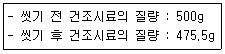
- 2.45%
- 3.52%
- 4.9%
- 5.2%
(정답률: 70%)
19. 콘크리트 배합강도를 구하기 위해 23회의 압축강도 시험을 실시한 경우 표준편차의 보정계수는 얼마인가?
- 1.03
- 1.⑤
- 1.08
- 1.16
(정답률: 46%)
20. 일반적인 시멘트의 강도에 대한 설명으로 옳지 않은 것은?
- 제령 및 양상조건에 따라 다르다.
- 시멘트 페이스트의 강도 값을 의미한다.
- 시멘트의 조성에 영향이 있다.
- 물-시멘트비에 따라 변하게 된다.
(정답률: 76%)
2과목: 콘크리트제조, 시험 및 품질관리
21. 굳지 않은 콘크리트의 슬럼프 시험을 할 때 콘크리트 시료를 몇 층으로 나누어 채우는가?
- 슬럼프 콘 용적의 약 1/2씩 되도록 2층
- 슬럼프 콘 용적의 약 1/3씩 되도록 3층
- 슬럼프 콘 용적의 약 1/4씩 되도록 4층
- 슬럼프 콘 용적의 약 1/5씩 되도록 5층
(정답률: 93%)
22. 공기연행제의 품질 및 공기연행제가 공기량에 미치는 영향인자 요인이 아닌 것은?
- 온도가 높으면 공기량은 자연적으로 증가한다.
- 시멘트의 분말도가 증가하면 공기량은 감소한다.
- 비빔시간 3~5분에서 공기량은 최대가 된다.
- 펌프시공 및 지나친 다짐 등에서 공기량은 저하한다.
(정답률: 72%)
23. 콘크리트의 휨강도 시험에 사용되는 공시체의 치수로 알맞은 것은?
- 15×15×45cm
- 10×10×30cm
- 10×10×35cm
- 15×15×53cm
(정답률: 66%)
24. 콘크리트 믹서 종류별 비비기 시간의 표준값에 대한 설명 중 맞는 것은? (단, 일반 콘크리트의 경우)
- 가경식:1분30초 이상, 강제식:1분 이상
- 가경식:1분30초 이상, 강제식:30초 이상
- 가경식:2분 이상, 강제식:1분 이상
- 가경식:30초 이상, 강제식:1분 이상
(정답률: 89%)
25. 콘크리트 품질관리에 사용되는 관리도 중 계량값 관리도가 아닌 것은?
- X관리도
- P관리도
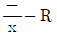
관리도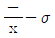
관리도
(정답률: 81%)
26. 콘크리트 강도 시험용 원주공시체(ø150mm×300mm)를 할렬에 의한 간접인장강도 시험을 실시한 결과 160kN에서 파괴되었다. 콘크리트 인장강도로 옳은 것은?
- 1.54MPa
- 2.26MPa
- 2.96MPa
- 4.57MPa
(정답률: 78%)
27. 일반 콘크리트의 비비기에 대한 설명으로 틀린 것은?
- 믹서 안의 콘크리트를 전부 꺼낸 후가 아니면 믹서 안에 다음재료를 넣지 않아야 한다.
- 연속믹서를 사용할 경우, 비비기 시작 후 최초에 배출되는 콘크리트는 사용할 수 있다.
- 비비기 시간은 시험에 의해 정하는 것을 원칙으로 한다.
- 비비기는 미리 정해 둔 비비기 시간의 3배 이상 계속해서는 안 된다.
(정답률: 79%)
28. 콘크리트의 압축강도시험 데이터 5개를 보고 표준편차를 구한 것으로 옳은 것은?
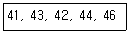
- 1.92MPa
- 2.31MPa
- 2.45MPa
- 2.56MPa
(정답률: 57%)
29. 콘크리트의 품질관리에 사용하는 관리도에 관한 설명으로 틀린 것은?
- 관리도로 콘크리트의 제조공정의 안정 여부를 판정할 수 있다.
- 관리도를 사용하면 우연한 변동과 이상 원인에 의한 변동을 구분할 수 있다.
- 압축강도와 같은 데이터는 계수값 관리도에 의해 관리하는 것이 효과적이다.
- 관리도는 관리특성의 중심적 특성을 나타내는 중심선과 이것의 상하에 허용되는 범위의 폭을 나타내는 관리한계로 구성된다.
(정답률: 55%)
30. 콘크리트의 정탄성계수는 콘크리트의 어떤 특성에서 얻어지는가?
- 푸아송비
- 크리프
- S-N곡선(반복하중 횟수_응력 곡선)
- 응력-변형률 곡선
(정답률: 67%)
31. 콘크리트의 균열 중 경화 후에 발생하는 균열의 종류에 속하지 않는 것은?
- 건조수축균열
- 온도균열
- 소성수축균열
- 횡균열
(정답률: 76%)
32. 콘크리트의 품질관리 도구 중 결과에 원인이 어떻게 관여하고 있는지를 한눈으로 알 수 있도록 작성한 것으로, 일명 생선뼈 그림이라고도 하는 것은?
- 히스토그램
- 특성요인도
- 파레토그림
- 체크시트
(정답률: 77%)
33. 레디믹스트 콘크리트의 지정 슬럼프 값이 25mm일 때 슬럼프의 허용오차로 옳은 것은?
- ±5mm
- ±10mm
- ±15mm
- ±20mm
(정답률: 75%)
34. 콘크리트 재료의 계량에 대한 설명으로 틀린 것은?
- 재료는 현장배합에 의해 계량한다.
- 각 재료는 1배치씩 질량으로 계량한다.
- 골재의 유효흡수율은 보통 15~30분간의 흡수율로 본다.
- 혼화제를 녹이는 데 사용하는 물이나 묽게 하는데 사용하는 물은 다위 수량에서 제외한다.
(정답률: 65%)
35. 콘크리트의 압축강도 시험 방법에 대한 설명으로 틀린 것은?
- 상하의 가압판의 크기는 공시체의 지름이상으로 하고 두께 25mm 이상으로 한다.
- 공시체를 공시체 지름의 5% 이내의 오차에서 그 중심축이 가압판의 중심과 일치하도록 놓고 시험을 실시한다.
- 하중을 가하는 속도는 압축응력도의 증가율이 매초(0.6±0.4)MPa이 되도록 한다.
- 시험기의 가압판과 공시체의 사이에는 쿠션재를 넣어서는 안된다.(다만 언본드 캐핑에 의한 경우는 제외한다.)
(정답률: 49%)
36. 레디믹스트 콘크리트의 제조설비에 대한 설명으로 틀린 것은?
- 골재 저장 설비는 콘크리트 최대 출하량의 1일분 이상에 상당하는 골재량을 저장할 수 있는 크기로 한다.
- 계량기는 서로 배합이 다른 콘크리트의 각 재료를 연속적으로 계량할 수 있어야 한다.
- 믹서는 이동식 믹서로 하여야 하며, 각 재료를 충분히 혼합시켜 균일한 상태로 배출할 수 있어야 한다.
- 콘크리트 운반차는 트럭믹서나 트럭 애지테이터를 사용한다.
(정답률: 53%)
37. 다음 중 콘크리트 비파괴시험으로 측정하거나 추정하지 않는 것은?
- 크리프 변형률
- 압축강도
- 동탄성계수
- 동결융해 저항성
(정답률: 50%)
38. 된반죽의 콘크리트를 진동으로 다짐을 실시하여 반죽질기를 측정하는 시험은?
- 슬럼프 시험
- 비비(VB) 시험
- 플로우 시험
- 볼 관입시험
(정답률: 73%)
39. 콘크리트의 내구성을 향상시기키 위한 방법으로 잘못된 것은?
- 체적 변화가 큰 콘크리트를 만든다.
- 습윤양생을 충분히 실시한다.
- 물-결합재비는 가능한 낮게 한다.
- 다짐을 철저히 한다.
(정답률: 75%)
40. 콘크리트 인장강도에 대한 설명 중 옳지 않은 것은?
- 휨부재의 처짐 및 균열과 같은 사용성 설계에서 중요한 역할을 한다.
- 쪼갬 인장강도시험에 의해 구할 수 있다.
- 일반적으로 휨부재의 설계에서 인장강도를 무시한다.
- 인장강도는 압축강도의 약 50% 정도이다.
(정답률: 59%)
3과목: 콘크리트의 시공
41. 고강도 콘크리트에 대한 다음의 기술내용 중 잘못된 것은?
- 고강도 콘크리트의 설계기준강도는 일반콘크리트에서 40MPa이상, 경량골재 콘크리트에서는 25MPa이상으로 규정하고 있다.
- 기상의 변화가 심하지 않을 경우에는 공기 연행제를 사용하지 않은 것을 원칙으로 한다.
- 잔골재율은 소요의 워커빌리티를 얻도록 시험에 의하여 결정하여야 하며, 가능한 작게 하도록 한다.
- 콘크리트 타설 시 낙하고는 1m 이하로 한다. 또한 콘크리트는 재려분리가 일어나지 않는 방법으로 취급하여야 한다.
(정답률: 79%)
42. 연질 지반 위에 취 슬래브 등(내부 구속응력이 큰 경우)내부 온도가 최고일 때 내부와 표면적과의 온도차가 30℃발생하였다. 간이적인 방법에 의한 온도 균열지수를 구하면?
- 2.0
- 1.5
- 1.0
- 0.5
(정답률: 40%)
43. 표면마무리에 대한 설명으로 옳은 것은?
- 표면마무리는 내구성, 수밀성 영향을 주지 않는다.
- 마모를 받는 면의 경우에는 물-결합재비를 크게 한다.
- 표면마무리는 콘크리트 윗면으로 스며 올라온 물을 처리한 후에 한다.
- 거푸집 제거 후 발생한 콘크리트 표면 균열은 방치해도 좋다.
(정답률: 78%)
44. 시공이음면의 거푸집 철거는 콘크리트가 굳은 후 되도록 빠른 시기에 하는 것이 좋다. 일반적으로 겨울철에 연직시롱이음부의 거푸집 제거시기는 콘크리트 타설 후 얼마 정도 하는 것이 좋은가?
- 4~6시간
- 7~9시간
- 10~15시간
- 15~20시간
(정답률: 79%)
45. 수중 콘크리트 타설의 원칙을 설명한 것으로 틀린 것은?
- 시멘트의 유실, 레이턴스의 발생을 방지하기 위하여 정수 중에 타설하는 것이 좋으며, 완전히 물막이를 할 수 없는 경우에도 유속은 1초간 50mm 이하로 하여야 한다.
- 트레미로 타설하는 경우 트레미의 안지름은 수심 5m이상에서 300~500mm 정도가 좋으며, 굵은골재 최대치수의 8배 정도가 필요하다.
- 한 구획의 콘크리트를 빠른 시간 내에 타설할 수 있도록 시공계획을 세우고 수중에 낙하시켜 시간을 단축시킨다.
- 콘크리트 펌프안지름은 0.1~0.15m 정도가 좋으며, 수송관1개로 타설할 수 있는 면적은 5m2정도이다.
(정답률: 77%)
46. 경량골재 콘크리트에 대한 설명으로 틀린 것은?
- 경량골재 콘크리트는 공기연행 콘크리트로 하는 것을 원칙으로 한다.
- 일반적으로 인공경량골재 콘크리트는 동결융해의 반복에 대한 저항성능이 우수하다.
- 단위 시멘트량의 최소값은 300kg/m3, 물-결합재비의 최대값은 60%로 한다.
- 슬럼프는 작업에 알맞은 범위 내에서 작게 하여야 하며, 일반적인 경우 대체로 50~180mm를 표준으로 한다.
(정답률: 65%)
47. 온도균열지수에 대한 설명으로 틀린 것은?
- 온도균열지수는 재령에 상관없이 일정한 값을 가진다.
- 온도균열지수가 클수록 균열이 생기기 어렵다.
- 온도균열지수는 콘크리트 인장강도와 온도응력의 비이다.
- 온도균열지수는 사용 시멘트량의 영향을 받는다.
(정답률: 70%)
48. 섬유보강 콘크리트의 특성에 대한 설명으로 틀린 것은?
- 인장강도와 균열에 대한 저항성이 높다.
- 피로강도 개선으로 포장의 두께나 터널 라이닝 두께를 감소시킬 수 있다.
- 부재의 전단내력을 증대시킬 수 있다.
- 유동성이 좋아 작업성이 개선된다.
(정답률: 53%)
49. 수밀 콘크리트의 연속타설시간 간격은 외기온이 25℃ 이하일 때 몇 시간 이내로 하여야 하는가?
- 1시간
- 1시간 30분
- 2시간
- 2시간 30분
(정답률: 60%)
50. 콘크리트의 이음에 대한 설명으로 틀린 것은?
- 수평시공이음이 거푸집에 접하는 선은 될 수 있는대로 수평한 직선이 되도록 한다.
- 역방향 타설 콘크리트의 시공 시에는 콘크리트의 침하를 고려하여 시공이음이 일체가 되도록 시공방법을 결정하여야 한다.
- 연직시공이음부의 거푸집 제거 시기는 콘크리트를 타설하고 난 후 3일 이상이 경과하여야 한다.
- 시공이음은 될 수 있는 대로 전단력이 적은 위치에 설치하고, 부재의 압축력이 작용하는 방향과 직각이 되도록 하는 것이 원칙이다.
(정답률: 52%)
51. 매스 콘크리트에 대한 설명으로 옳은 것은?
- 콘크리트의 발열량은 단위 시멘트량과 무관하다.
- 타설시간 간격은 외기온 25℃이상에서는 180분 이내로 하여야 한다.
- 겨울철에는 방열성이 높은 거푸집을 사용한다.
- 매스 콘크리트로 다루어야 하는 구조물의 부재치수는 일반적인 표준으로서 넓이가 넓은 평판구조의 경우 두께 0.8m이상으로 한다.
(정답률: 64%)
52. 한중 콘크리트에 대한 설명으로 틀린 것은?
- 한중 콘크리트에는 공기연행 콘크리트를 사용하지 않는 것을 원칙으로 한다.
- 하루의 평균 기온이 4℃이하가 예상되는 조건일 때는 한중 콘크리트로 시공한다.
- 물-결합재비는 원칙 적으로 60% 이하로 하여야 한다.
- 가열한 재료를 믹서에 투입하는 순서는 시멘트가 급결하지 않도록 정하여야 한다.
(정답률: 62%)
53. 숏크리트 코어 공시체(ø10×10cm)로부터 채취한 강섬유의 질량이 30.8g이었다. 강섬유 혼입률(부피기준)구하면? (단, 강섬유의 단위질량은 7.85g/cm3이다.)
- 5%
- 3%
- 1%
- 0.5%
(정답률: 19%)
54. 공장제품용 콘크리트의 일반 사항을 설명한 것으로 잘못된 것은?
- 슬럼프가 20mm이상인 콘크리트의 배합은 슬럼프 시험을 원칙으로 한다.
- 프리스트레스트 콘크리트 공장 제품의 경우 순환고재를 사용할 수 없다.
- 일반적인 공장제품은 재령 7일에서의 압축강도 시험값을 콘크리트의 압축강도로 나타낸다.
- 프리스트레스 긴장재는 스터럽이나 온도철근 등 다른 철근과 용접할 수 없다.
(정답률: 76%)
55. 포장용 콘크리트의 배합기준에 대한 설명으로 틀린 것은?
- 설계기준 휨강도(f28)는 3MPa이상이어야 한다.
- 단위 수량은 15kg/m3이하이어야 한다.
- 공기연행 콘크리트의 공기량 범위는 4~6%이어야 한다.
- 굵은 골재의 최대치수는 40mm 이하이어야 한다.
(정답률: 68%)
56. 프리플레이스트 콘크리트의 압송 주입에 관한 설명으로 옳지 않은 것은?
- 수송간을 통과하는 모르타르의 평균유속은 0.5~2.0m/sec정도가 되도록 한다.
- 시공 중 모르타르 주입을 주기적으로 중단시켜 시공이음이 발생하도록 유도하여 온도변화 및 건조수축 등에 의한 균열 발생을 제어하여야 한다.
- 수송관의 연장은 짧게 하여야 하며, 연장이 100m 이상일 경우에는 중개용 펌프를 사용한다.
- 연직주입관 및 수평주입관의 수평간격은 2m 정도로 표준으로 한다.
(정답률: 42%)
57. 다음 중 경향골재 콘크리트 종류에 속하지 않은 것은?
- 포리머시멘트 콘크리트
- 경량골재 콘크리트
- 경량기포 콘크리트
- 무잔골재 콘크리트
(정답률: 69%)
58. 다음 중 콘크리트의 일반적인 양생방법에 속하지 않는 것은?
- 증기양생
- 습윤양생
- 건조양생
- 급열양생
(정답률: 62%)
59. 다음은 숏크리트 제조에 대한 설명이다 틀린 것은?
- 섬유를 사용할 경우 배치플랜트에는 선유를 개량하기 위한 호퍼 및 자동계량 기록장치를 설치하여야 하며 계량오차는 ±3%이내이어야 한다.
- 분말 급결제의 저장성비는 분말 급결제의 습기 흡수를 방지할 수 있는 것이어야 한다.
- 숏크리트 장비는 소정의 배합 재료를 압송하면서 뿜어 불일 수 있는 것이어야 한다.
- 건식 방식의 경우 잔골재는 절대건조상태를 유지해야 한다.
(정답률: 53%)
60. 다음 중 콘크리트 공장제품의 특징에 대한 설명으로 틀린 것은?
- 기후에 좌우되지 않지만 동해 방지를 위해 한랭지 시공이 불가능하다.
- 제품이 다양하고 동일 규격 제품 생산이 가능하다.
- 품질관리의 신뢰가 있다.
- 현장에서의 양생이 필요없이 공기가 단축된다.
(정답률: 85%)
4과목: 콘크리트 구조 및 유지관리
61. 프리스트레스트(prestressed)콘크리트에 관한 일반적 표현이 잘못된 것은?
- PS장재는 릭렉세이션(relaxation)값이 작은 것을 사용하는 것이 바람직하다.
- 콘크리트는 크리프가 큰 것을 사용하는 것이 바람직하다.
- 포리텐션(post-tention)방식은 현장에서 프리스트렉스를 도입하는 경우가 많다.
- 프리텐션(ptr-tension)방식은 공장에서 동일 종류의 제품을 대량으로 제조하는 경우가 많다.
(정답률: 66%)
62. 인장철근 D32(db=31.8)를 정착시키는 데 필요한 기본 정착길이(ldb)는? (단, fck=24MPa, fy=400MPa, λ=1.0)
- 1324mm
- 1558mm
- 1672mm
- 1762mm
(정답률: 63%)
63. 유효깊이는 600mm이고 폭이 300mm 보의 전당보강 철근이 부담하는 전단력이 그림참조m2 라면, 수직스터럽의 최대 간격은? (단, 강도설계법에 따라 설계한다.)
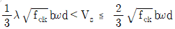
- 600mm
- 300mm
- 150mm
- 125mm
(정답률: 44%)
64. 철근 부식이 의심스러운 경우 실시하는 비파괴검사 방법은?
- 초음파법
- 반발경도법
- 전자파 레이더법
- 자연전 위법
(정답률: 52%)
65. 강고설계법에서 고정하중(D)과 활하중(L)만 작용하는 휭부재에서 계수하중을 구하기 위한 하중조합은?
- U=1.2D+1.6L
- U=1.7D+1.4L
- U=0.4D+0.5L
- U=1.4D+1.4L
(정답률: 88%)
66. 페놀프탄레인 시약을 사용하여 조사랑 수 있는 열화형상은?
- 중성화
- 염해
- 알칼리-실리카반응
- 동해
(정답률: 73%)
67. 그림과 같은 단철근 직사각형 보에서 fu=400MPa, fck=30MPa 일 때 강도설계법에 의한 등가응력의 깊이 a는?
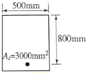
- 49.2mm
- 94.1mm
- 13.8.mm
- 21.7mm
(정답률: 66%)
68. 응벽의 안전에 대한 설명으로 틀린 것은?(오류 신고가 접수된 문제입니다. 반드시 정답과 해설을 확인하시기 바랍니다.)
- 전도에 대한 저항휨모멘트는 횡토압에 의한 전도모멘트의 1.5배 이상이어야 한다.
- 활동에 대한 저항력은 옹벽에 작용하는 수핑력의1.5뱅배이상이어야 한다.
- 전도 및 지반지지력에 대한 안정조선은 만족하지만, 활동에 대한 안정조건만을 만족하지못할 경우에는 활동 방지벽 경우에는 활동 방지벽 혹은 횡방향 앵커 등을 설치 하여 황동저 할력을 중대시킬 수 있다.
- 지반에 유발되는 최대 지반반력이 지반의 허용지지력을 초과하지 않아야 한다.
(정답률: 25%)
69. 다음과 같은 단철근 직삭각형 단면 보가 균형철근비를 가질 때 중립축까지의 거리 c는 얼마인가?(오류 신고가 접수된 문제입니다. 반드시 정답과 해설을 확인하시기 바랍니다.)
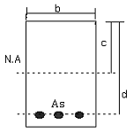
- 255mm
- 260mm
- 265mm
- 270mm
(정답률: 19%)
70. 콘크리트 구조물에 0.1mm 정도의 미세한 균열이 발생한 경우 내구성이 저하하게 된다. 따라서 구조물의 방수성 및 내구성을 향상시키기 위해 균열 발생 부위에 도막을 형성하여 보수하는 공법은?
- 표면처리공법
- 제알칼리화공법
- 충전공법
- 주입공법
(정답률: 80%)
71. 콘크리트 압축강도 추정을 위한 반발경도 시험(KS F2730)에 대한 설명으로 틀린 것은?
- 시험할 콘크리트 부재는 두께가 100mm 이상이어야 하며 하나의 구조체에 고정되어야 한다.
- 시험할 때 타격위치는 가장자리로부터 100mm 이상 떨어져야 하고, 서로 30mm 이내로 근접해서는 안된다.
- 탄산화가 진행된 콘크리트의 경우 정상보다 낮은 반발경도를 나타낸다.
- 콘크리트 내부의 온도가 0℃ 이하인 경우 정상보다 높은 반발 경도를 나타낸다.
(정답률: 24%)
72. As=4,000mm2, As’=1,500mm2로 배근된 그림과 같은 복철근 보의 탄성처짐이 15mm이다. 5년 이상의 지속하중에 의해 유발되는 장기처짐은 얼마인가?(오류 신고가 접수된 문제입니다. 반드시 정답과 해설을 확인하시기 바랍니다.)
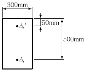
- 15mm
- 20mm
- 25mm
- 30mm
(정답률: 25%)
73. 이형 봉강SD400를 최외단 인장철근으로 사용한 압축부재에서 순인장 변형률 (ϵt)dl 0.002와 0.006사이인 단면의 경우 나선철근으로 보강된 부재의 강도감소 계수는?
- ø=0.65+(ϵt-0.002)×50
- ø=0.70+(ϵt-0.002)×50
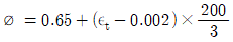
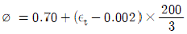
(정답률: 40%)
74. 돌로마이트질 석회암이 알칼리 이온과 반응하여 그 생성물이 팽창하거나 암석 중에 존재하는 점토 광물이 흡수, 팽창하여 콘크리트에 균열을 일으키는 반응으로 옳은 것은?
- 알칼리 실리케이트 반응
- 알칼리 탄산염 반응
- 알칼리 수산화 반응
- 알칼리 실리카 반응
(정답률: 53%)
75. 콘크리트 구조물의 외관조사 중 유안조사할 때 추를 이용하여 조사하는 방법은 다음 중 어떤 종류의 손상에 적절한가?
- 경사
- 균열
- 이상 진동
- 박리
(정답률: 73%)
76. 콘크리트 타성 후 양생기간에 발생하는 수화열로 인한 열화를 감소시킬 수 있는 방법으로 적합한 것은?
- 습윤양생을 철저히 한다.
- 단면의 크기를 증대한다.
- 강제거푸집 대신에 목제 거푸집을 이용한다.
- 거푸집 해체를 천천히 한다.
(정답률: 78%)
77. 철근 콘크리트 구조물의 장점으로 틀린 것은?
- 일체식 구조를 만들 수 있다.
- 구조물의 형상과 치수에 제약을 받지 않는다.
- 소음, 진동이 적고 내구성 및 내화성이 좋다.
- 구조물 시공 후 개조, 보강이 쉽다.
(정답률: 71%)
78. 콘크리트 구조물의 보수방법을 선택할 경우 중요하게 고려되지 않아도 되는 것은?
- 보수의 목적
- 진단방법
- 손상의 원인
- 재발 가능성
(정답률: 56%)
79. 콘크리트 구조물 보의 보강공법으로 적합하지 않은 것은?
- 강판접착공법
- 중타보강공법
- 강판감기공법
- 탄성섬유시트 접착공법
(정답률: 53%)
80. 콘크리트 부재 두께가 300mm인 두께 방향으로 초음파 전파시간을 측정한 결과가 200μs이었다. 이 콘크리트의 초음파 속도는?
- 1500m/s
- 6000m/s
- 15000m/s
- 60000m/s
(정답률: 38%)